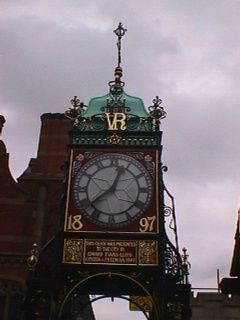
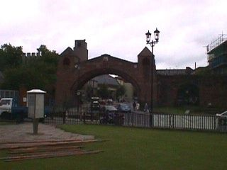
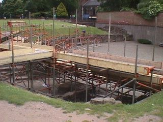
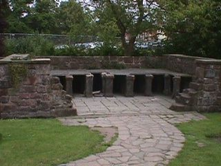
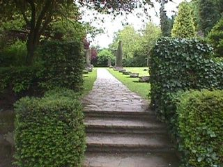
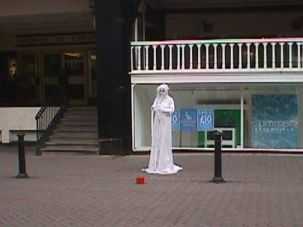
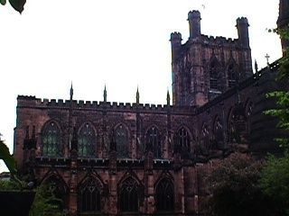

Today we flew to England. One of Joe's uncles lives there so we didn't have to stay in a hotel for the first few days we were there. Joe's uncle was very knowledgeable of England and he was a great guide for us while we were there. He was also a good cook. Our first day there he took us to Chester, which used to be a Roman town.
This view is from a wall that spanned across the street. There is a gate below so cars can get through.
This clock was above the wall we were standing on.
This is a picture of the wall we were standing on, but the archway isn't the same one we were standing on when I took the previous two pictures.
Recently, a Roman theatre was found in Chester. This picture shows the effort of excavating the theatre.
This is a picture of the foundation of an old Roman home. Small support pillars held up the floor. Romans would actually stand and live on top of the pillars and wood was burned around the pillars to keep the house heated during the winter.
This path leads to the Roman home. On either side of the path you can see old broken pillars.
This is the first of many human "statues" we saw on our vacation. Most of the "statues" did actually move, but didn't usually speak. This woman dressed as a ghost? seemed pretty eerie to me as I passed her.
This is an old church we passed while walking through Chester. The picture didn't turn out too well.